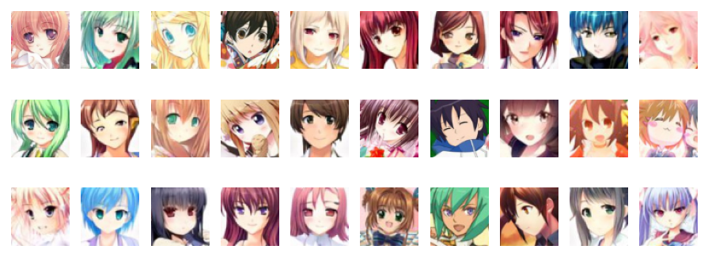
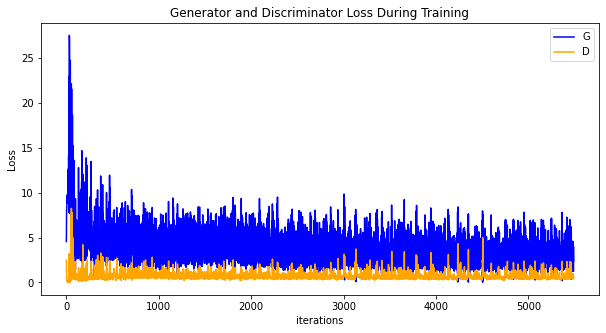
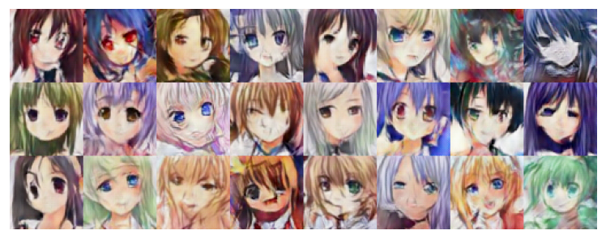

Generating Cartoon Head Portrait via DCGAN¶

In the following tutorial, we will use sample code to show how to set up the network, optimizer, calculate the loss function, and initialize the model weight. This Anime Avatar Face Image Dataset contains 70,171 96 x 96 anime avatar face images.
GAN Basic Principle¶
Generative Adversarial Network (GAN) is a deep learning model, and is recently one of the most promising methods for unsupervised learning in complex distribution.
GAN was first proposed by Ian J. Goodfellow in his paper Generative Adversarial Nets in 2014. It consists of two different models: generator and discriminator.
The generator generates “fake” images that look like the images for training.
The discriminator determines whether the images output by the generator are real training images or fake images.
In the training process, the generator continuously attempts to deceive the discriminator by generating a better fake image, and the discriminator gradually improves the capability of discriminating images in this process. It reaches the nash equilibrium when the distribution of the fake image generated by the generator is the same as that of the training image, that is, the confidence of true/false judgment of the discriminator is 50%. Let’s see some symbols that need to be used in the entire process:
Discriminator symbols:
\(x\): image data
\(D(x)\): discriminator network, which provides the probability of determining an image as a real image.
During the discrimination, \(D(x)\) needs to process a 3 x 64 x 64 image in CHW format. When \(x\) comes from training data, the value of \(D(x)\) should be approximate to 1. When \(x\) comes from the generator, the value of \(D(x)\) should be approximate to 0. Therefore, \(D(x)\) may also be considered as a conventional binary classifier.
Generator symbols:
\(z\): implicit vector extracted from the standard normal distribution
\(G(z)\): generator function that maps implicit vector \(z\) to the data space
Function \(G(z)\) is used to generate a data distribution similar to the real data distribution \(pdata(x)\) based on the random Gaussian noise \(z\) by using a generative network, where \(θ\) is a network parameter. We want to find an optimal \(θ\) value so that \(pG(x;θ)\) and \(pdata(x)\) are as close as possible.
\(D(G(z))\) indicates the probability that the fake image generated by the generator \(G\) is determined to be a real image. As described in Goodfellow’s paper, D and G are in a game. D wants to correctly classify real and fake images to the greatest extent, that is, parameter \(log D(x)\). G attempts to deceive D to minimize the probability that the fake image is recognized, that is, parameter \(log(1−D(G(z)))\). A loss function of the GAN is as follows:
Theoretically, it reaches the nash equilibrium when \(pG(x;θ) = pdata(x)\), where the discriminator randomly guesses whether the input is a real or fake image. The following describes the game process of the generator and discriminator:

In the preceding figure, the blue dotted line indicates the discriminator, the black dotted line indicates the real data distribution, the green solid line indicates the false data distribution generated by the generator, z indicates the implicit vector, and x indicates the generated fake image G(z).
At the beginning of the training, the quality of the generator and discriminator is poor. The generator randomly generates a data distribution.
The discriminator optimizes the network by calculating the gradient and loss function. The data close to the real data distribution is determined as 1, and the data close to the data distribution generated by the generator is determined as 0.
The generator generates data that is closer to the actual data distribution through optimization.
The data generated by the generator reaches the same distribution as the real data. In this case, the output of the discriminator is 1/2.
DCGAN Basic Principle¶
Deep Convolutional Generative Adversarial Network (DCGAN) is a direct extension of GAN. The difference is that DCGAN uses convolution and transposed convolutional layers in the discriminator and generator, respectively.
It was first proposed by Radford et al. in paper Unsupervised Representation Learning With Deep Convolutional Generative Adversarial Networks. The discriminator consists of a hierarchical convolutional layer, a BatchNorm layer, and a LeakyReLU activation layer. Its input is a 3 x 64 x 64 image, and the output is the probability that the image is a real image. The generator consists of a transposed convolutional layer, a BatchNorm layer, and a ReLU activation layer. Its input is the implicit vector \(z\) extracted from the standard normal distribution, and the output is a 3 x 64 x 64 RGB image.
This tutorial uses the anime face dataset to train a GAN, which is then used to generate anime avatar face images.
Data Preparation and Processing¶
First, download the dataset to the specified directory and decompress it. The sample code is as follows:
from mindvision import dataset
dl_path = "./datasets"
dl_url = "https://download.mindspore.cn/dataset/Faces/faces.zip"
dl = dataset.DownLoad() # Download the dataset.
dl.download_and_extract_archive(url=dl_url, download_path=dl_path)
The directory structure of the downloaded dataset is as follows:
./datasets/faces
├── 0.jpg
├── 1.jpg
├── 2.jpg
├── 3.jpg
├── 4.jpg
...
├── 70169.jpg
└── 70170.jpg
Data Processing¶
First, define some inputs for the execution process:
import mindspore as ms
# Use the graph execution mode and specify the training platform to GPU. If the Ascend platform is required, replace it with Ascend.
ms.set_context(mode=ms.GRAPH_MODE, device_target="GPU")
data_root = "./datasets" # Dataset root directory
batch_size = 128 # Batch size
image_size = 64 # Size of the training image.
nc = 3 # Number of color channels.
nz = 100 # Length of the implicit vector
ngf = 64 # Size of the feature map in the generator
ndf = 64 # Size of the feature map in the discriminator
num_epochs = 10 # Number of training epochs
lr = 0.0002 # Learning rate
beta1 = 0.5 # Beta 1 hyperparameter of the Adam optimizer
Define the create_dataset_imagenet function to process and augment data.
import numpy as np
import mindspore as ms
import mindspore.dataset as ds
import mindspore.dataset.vision as vision
from mindspore import nn, ops
def create_dataset_imagenet(dataset_path):
"""Data loading"""
data_set = ds.ImageFolderDataset(dataset_path, num_parallel_workers=4, shuffle=True,
decode=True)
# Data augmentation
transform_img = [
vision.Resize(image_size),
vision.CenterCrop(image_size),
vision.HWC2CHW(),
lambda x: ((x / 255).astype("float32"), np.random.normal(size=(nz, 1, 1)).astype("float32"))
]
# Data mapping
data_set = data_set.map(input_columns="image", num_parallel_workers=4, operations=transform_img, column_order=[\"image\", \"latent_code\"])
# Batch operation
data_set = data_set.batch(batch_size)
return data_set
# Obtain the processed dataset.
data = create_dataset_imagenet(data_root)
# Obtain the dataset size.
size = data.get_dataset_size()
Use the create_dict_iterator function to convert data into a dictionary iterator, and then use the matplotlib module to visualize some training data.
import matplotlib.pyplot as plt
%matplotlib inline
data_iter = next(data.create_dict_iterator(output_numpy=True))
# Visualize some training data.
plt.figure(figsize=(10, 3), dpi=140)
for i, image in enumerate(data_iter['image'][:30], 1):
plt.subplot(3, 10, i)
plt.axis("off")
plt.imshow(image.transpose(1, 2, 0))
plt.show()

Setting Up a GAN¶
After the data is processed, you can set up a GAN. According to the DCGAN paper, all model weights should be randomly initialized from a normal distribution with mean of 0 and sigma of 0.02.
Generator¶
Generator G maps the implicit vector z to the data space. Because the data is an image, this process also creates an RGB image with the same size as the real image. In practice, this function is implemented by using a series of Conv2dTranspose transposed convolutional layers. Each layer is paired with the BatchNorm2d layer and ReLu activation layer. The output data passes through the tanh function and returns a value within the data range of [–1,1].
The following shows the image generated by DCGAN:

Image source: https://arxiv.org/pdf/1511.06434.pdf
The generator structure in the code is determined by nz, ngf, and nc set in the input. nz is the length of implicit vector z, ngf determines the size of the feature map propagated by the generator, and nc is the number of channels in the output image.
The code implementation of the generator is as follows:
from mindspore.common import initializer as init
def conv_t(in_channels, out_channels, kernel_size, stride=1, padding=0, pad_mode="pad"):
"""Define the transposed convolutional layer."""
weight_init = init.Normal(mean=0, sigma=0.02)
return nn.Conv2dTranspose(in_channels, out_channels,
kernel_size=kernel_size, stride=stride, padding=padding,
weight_init=weight_init, has_bias=False, pad_mode=pad_mode)
def bn(num_features):
"""Define the BatchNorm2d layer."""
gamma_init = init.Normal(mean=1, sigma=0.02)
return nn.BatchNorm2d(num_features=num_features, gamma_init=gamma_init)
class Generator(nn.Cell):
"""DCGAN generator"""
def __init__(self):
super(Generator, self).__init__()
self.generator = nn.SequentialCell()
self.generator.append(conv_t(nz, ngf * 8, 4, 1, 0))
self.generator.append(bn(ngf * 8))
self.generator.append(nn.ReLU())
self.generator.append(conv_t(ngf * 8, ngf * 4, 4, 2, 1))
self.generator.append(bn(ngf * 4))
self.generator.append(nn.ReLU())
self.generator.append(conv_t(ngf * 4, ngf * 2, 4, 2, 1))
self.generator.append(bn(ngf * 2))
self.generator.append(nn.ReLU())
self.generator.append(conv_t(ngf * 2, ngf, 4, 2, 1))
self.generator.append(bn(ngf))
self.generator.append(nn.ReLU())
self.generator.append(conv_t(ngf, nc, 4, 2, 1))
self.generator.append(nn.Tanh())
def construct(self, x):
return self.generator(x)
# Instantiate the generator.
netG = Generator()
Discriminator¶
As described above, discriminator D is a binary network model, and outputs the probability that the image is determined as a real image. It is processed through a series of Conv2d, BatchNorm2d, and LeakyReLU layers and obtains the final probability through the Sigmoid activation function.
The DCGAN paper mentions that using convolution instead of pooling for downsampling is a good way because it allows the network to learn its own pooling characteristics.
The code implementation of the discriminator is as follows:
def conv(in_channels, out_channels, kernel_size, stride=1, padding=0, pad_mode="pad"):
"""Define the convolutional layers."""
weight_init = init.Normal(mean=0, sigma=0.02)
return nn.Conv2d(in_channels, out_channels,
kernel_size=kernel_size, stride=stride, padding=padding,
weight_init=weight_init, has_bias=False, pad_mode=pad_mode)
class Discriminator(nn.Cell):
"""DCGAN discriminator"""
def __init__(self):
super(Discriminator, self).__init__()
self.discriminator = nn.SequentialCell()
self.discriminator.append(conv(nc, ndf, 4, 2, 1))
self.discriminator.append(nn.LeakyReLU(0.2))
self.discriminator.append(conv(ndf, ndf * 2, 4, 2, 1))
self.discriminator.append(bn(ndf * 2))
self.discriminator.append(nn.LeakyReLU(0.2))
self.discriminator.append(conv(ndf * 2, ndf * 4, 4, 2, 1))
self.discriminator.append(bn(ndf * 4))
self.discriminator.append(nn.LeakyReLU(0.2))
self.discriminator.append(conv(ndf * 4, ndf * 8, 4, 2, 1))
self.discriminator.append(bn(ndf * 8))
self.discriminator.append(nn.LeakyReLU(0.2))
self.discriminator.append(conv(ndf * 8, 1, 4, 1))
self.discriminator.append(nn.Sigmoid())
def construct(self, x):
return self.discriminator(x)
# Instantiate the discriminator.
netD = Discriminator()
Loss and Optimizer¶
MindSpore encapsulates the loss function and optimizer into cells. Due to the particularity of the GAN structure, the loss of the GAN is the multi-output form of the discriminator and generator, which makes the GAN different from a common classification network. Therefore, we need to customize the WithLossCell class to connect the loss function to the GAN.
Loss Function¶
When D and G are defined, the binary cross-entropy loss function BCELoss defined in MindSpore will be used to add the loss function and optimizer to D and G.
Connect the generator and loss function. The code is as follows:
# define loss function
loss = nn.BCELoss(reduction='mean')
class WithLossCellG(nn.Cell):
"""Connect the generator and loss function."""
def __init__(self, netD, netG, loss_fn):
super(WithLossCellG, self).__init__(auto_prefix=True)
self.netD = netD
self.netG = netG
self.loss_fn = loss_fn
def construct(self, latent_code):
"""Construct the loss calculation structure of the generator."""
fake_data = self.netG(latent_code)
out = self.netD(fake_data)
label_real = ops.OnesLike()(out)
loss = self.loss_fn(out, label_real)
return loss
Connect the discriminator and loss function. The code is as follows:
class WithLossCellD(nn.Cell):
"""Connect the discriminator and loss function."""
def __init__(self, netD, netG, loss_fn):
super(WithLossCellD, self).__init__(auto_prefix=True)
self.netD = netD
self.netG = netG
self.loss_fn = loss_fn
def construct(self, real_data, latent_code):
"""Construct the loss calculation structure of the discriminator."""
out_real = self.netD(real_data)
label_real = ops.OnesLike()(out_real)
loss_real = self.loss_fn(out_real, label_real)
fake_data = self.netG(latent_code)
fake_data = ops.stop_gradient(fake_data)
out_fake = self.netD(fake_data)
label_fake = ops.ZerosLike()(out_fake)
loss_fake = self.loss_fn(out_fake, label_fake)
return loss_real + loss_fake
Optimizer¶
Two separate optimizers are set up here, one for D and the other for G. Both are Adam optimizers with lr = 0.0002 and beta1 = 0.5.
To trace the learning progress of the generator, during the training process, a batch of fixed implicit vectors fixed_noise that comply with Gaussian distribution are periodically input to G. We can see the images generated by the implicit vector.
# Create a batch of implicit vectors to observe G.
np.random.seed(1)
fixed_noise = ms.Tensor(np.random.randn(64, nz, 1, 1), dtype=ms.float32)
# Set optimizers for the generator and discriminator, respectively.
optimizerD = nn.Adam(netD.trainable_params(), learning_rate=lr, beta1=beta1)
optimizerG = nn.Adam(netG.trainable_params(), learning_rate=lr, beta1=beta1)
Training Mode¶
Training is divided into two parts: discriminator training and generator training.
Train the discriminator.
The discriminator is trained to improve the probability of discriminating real images to the greatest extent. According to Goodfellow’s approach, we can update the discriminator by increasing its stochastic gradient so as to maximize the value of \(log D(x) + log(1 - D(G(z))\).
Train the generator.
As stated in the DCGAN paper, we want to train the generator by minimizing the value of \(log(1 - D(G(z)))\) to produce better fake images.
In the preceding two processes, the training loss is obtained, and statistics are collected at the end of each epoch. A batch of fixed_noise is pushed to the generator to intuitively trace the training progress of G.
The training process is as follows:
class DCGAN(nn.Cell):
"""Define the DCGAN."""
def __init__(self, myTrainOneStepCellForD, myTrainOneStepCellForG):
super(DCGAN, self).__init__(auto_prefix=True)
self.myTrainOneStepCellForD = myTrainOneStepCellForD
self.myTrainOneStepCellForG = myTrainOneStepCellForG
def construct(self, real_data, latent_code):
output_D = self.myTrainOneStepCellForD(real_data, latent_code).view(-1)
netD_loss = output_D.mean()
output_G = self.myTrainOneStepCellForG(latent_code).view(-1)
netG_loss = output_G.mean()
return netD_loss, netG_loss
Instantiate WithLossCell and TrainOneStepCell of the generator and discriminator.
# Instantiate `WithLossCell`.
netD_with_criterion = WithLossCellD(netD, netG, loss)
netG_with_criterion = WithLossCellG(netD, netG, loss)
# Instantiate `TrainOneStepCell`.
myTrainOneStepCellForD = nn.TrainOneStepCell(netD_with_criterion, optimizerD)
myTrainOneStepCellForG = nn.TrainOneStepCell(netG_with_criterion, optimizerG)
Train the DCGAN cyclically, and collect the loss of the generator and discriminator every 50 iterations to facilitate subsequent drawing of the image of the loss function during the training process.
import mindspore as ms
# Instantiate the DCGAN.
dcgan = DCGAN(myTrainOneStepCellForD, myTrainOneStepCellForG)
dcgan.set_train()
# Create an iterator.
data_loader = data.create_dict_iterator(output_numpy=True, num_epochs=num_epochs)
G_losses = []
D_losses = []
image_list = []
# Start cyclic training.
print("Starting Training Loop...")
for epoch in range(num_epochs):
# Read data for each epoch of training.
for i, d in enumerate(data_loader):
real_data = ms.Tensor(d['image'])
latent_code = ms.Tensor(d["latent_code"])
netD_loss, netG_loss = dcgan(real_data, latent_code)
if i % 50 == 0 or i == size - 1:
# Output training records.
print('[%2d/%d][%3d/%d] Loss_D:%7.4f Loss_G:%7.4f' % (
epoch + 1, num_epochs, i + 1, size, netD_loss.asnumpy(), netG_loss.asnumpy()))
D_losses.append(netD_loss.asnumpy())
G_losses.append(netG_loss.asnumpy())
# After each epoch ends, use the generator to generate a group of images.
img = netG(fixed_noise)
image_list.append(img.transpose(0, 2, 3, 1).asnumpy())
# Save the network model parameters as a CKPT file.
ms.save_checkpoint(netG, "Generator.ckpt")
ms.save_checkpoint(netD, "Discriminator.ckpt")
Starting Training Loop...
[ 1/10][ 1/549] Loss_D: 2.4791 Loss_G: 4.5578
[ 1/10][ 51/549] Loss_D: 3.0025 Loss_G:10.6227
[ 1/10][101/549] Loss_D: 0.8981 Loss_G: 7.0375
...
[ 1/10][451/549] Loss_D: 0.6918 Loss_G: 2.9458
[ 1/10][501/549] Loss_D: 0.5139 Loss_G: 4.7647
[ 1/10][549/549] Loss_D: 1.2940 Loss_G: 3.6022
...
[10/10][501/549] Loss_D: 0.4301 Loss_G: 2.1187
[10/10][549/549] Loss_D: 0.6756 Loss_G: 1.2940
Result¶
Run the following code to describe the relationship between the D and G loss and the training iteration:
plt.figure(figsize=(10, 5))
plt.title("Generator and Discriminator Loss During Training")
plt.plot(G_losses, label="G", color='blue')
plt.plot(D_losses, label="D", color='orange')
plt.xlabel("iterations")
plt.ylabel("Loss")
plt.legend()
plt.show()

Image generated by implicit vector fixed_noise during visual training.
import matplotlib.pyplot as plt
import matplotlib.animation as animation
def showGif(image_list):
show_list = []
fig = plt.figure(figsize=(8, 3), dpi=120)
for epoch in range(len(image_list)):
images = []
for i in range(3):
row = np.concatenate((image_list[epoch][i * 8:(i + 1) * 8]), axis=1)
images.append(row)
img = np.clip(np.concatenate((images[:]), axis=0), 0, 1)
plt.axis("off")
show_list.append([plt.imshow(img)])
ani = animation.ArtistAnimation(fig, show_list, interval=1000, repeat_delay=1000, blit=True)
ani.save('./dcgan.gif', writer='pillow', fps=1)
showGif(image_list)

As shown in the preceding figure, the image quality becomes better as the number of training iterations increases. If the number of training epochs increases and the value of num_epochs is greater than 50, the generated anime avatar face image is similar to that in the dataset. The following describes how to load the GAN parameter file Generator.ckpt in which the number of training epochs is 50 to generate an image. The code is as follows:
import mindspore as ms
from mindvision import dataset
dl_path = "./netG"
dl_url = "https://download.mindspore.cn/vision/classification/Generator.ckpt"
dl = dataset.DownLoad() # Download the `Generator.ckpt` file.
dl.download_url(url=dl_url, path=dl_path)
# Obtain model parameters from the file and load them to the network.
param_dict = ms.load_checkpoint("./netG/Generator.ckpt", netG)
img64 = netG(fixed_noise).transpose(0, 2, 3, 1).asnumpy()
fig = plt.figure(figsize=(8, 3), dpi=120)
images = []
for i in range(3):
images.append(np.concatenate((img64[i * 8:(i + 1) * 8]), axis=1))
img = np.clip(np.concatenate((images[:]), axis=0), 0, 1)
plt.axis("off")
plt.imshow(img)
plt.show()
